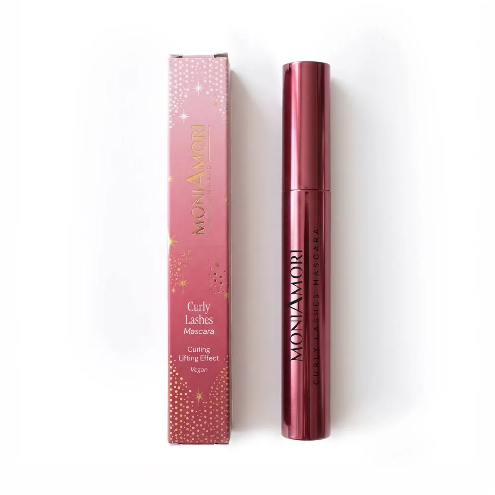

MALOHE
MALOHE
Maquillage · Yeux
Mascara MoniAmori
MoniAmori · Édition limitée · 8 ml
Description
Curly Lashes – Recourbant : Le Curly Lashes Mascara de MoniAmori est conçu pour sublimer la courbure naturelle des cils et ouvrir le regard tout en le définissant. Sa brosse conique permet d'atteindre avec précision même les cils les plus internes, contribuant à un effet lifting immédiat. Sa formule végane et délicate, à la texture crémeuse et modulable, permet d'intensifier progressivement le résultat, couche après couche, tout en laissant les cils légers et souples. Il contient un agent émollient innovant dérivé de l'Huile d'Olive, qui contribue à adoucir les cils et favorise une application uniforme et fluide. Enfin, la Cire Japonaise confère à la formule une texture douce et confortable.
Waterproof – Résistant à l’eau : Le Waterproof Mascara de MoniAmori est conçu pour offrir des cils impeccables du matin jusqu'au soir grâce à sa formule résistante à l'eau. Sa brosse épaisse légèrement conique capture les cils et les habille d'une couleur ultra- noire intense. Sa formule végane repose sur une technologie micellaire spécialement conçue pour envelopper les cils un à un, de manière homogène. Sa texture crémeuse est issue d'une association particulière de cires et d'huiles : la Cire Japonaise apporte douceur et souplesse, tandis que la Cire de Carnauba contribue à intensifier le volume et à créer un effet modulable. Le produit est également enrichi en Panthénol, qui aide à maintenir le niveau d'hydratation naturel des cils.
Super Intense – Longue tenue : Le Super Intense Mascara de MoniAmori est conçu pour offrir un effet longue tenue jusqu'à 8 heures. Sa brosse courbée épouse la forme naturelle des cils et les habille d'une couleur ultra-noire, tout en les séparant et en les définissant sans les alourdir ni les coller entre eux. Sa formule végane contient du Panthénol, qui aide à maintenir le niveau d'hydratation naturel des cils. Elle est également enrichie en Cire de Carnauba et en un agent émollient innovant dérivé de l'Huile d'Olive, qui contribuent à une texture agréable, légère et non grasse.
High Definition – Haute définition : Le High Definition Mascara de MoniAmori est conçu pour offrir définition, volume et une tenue jusqu'à 8 heures. Sa brosse conique apporte du corps aux cils et augmente leur volume de 88 % dès une seule application. Sa texture crémeuse et modulable permet d'intensifier facilement le résultat, pour des cils visiblement plus fournis et parfaitement définis. Sa formule vegan contient de l'Extrait de Bourgeons de Tilia Tomentosa, aux propriétés volumisantes, conditionnantes et protectrices, qui contribue à former un film protecteur autour des cils. Elle est également enrichie en Acide Hyaluronique, aux propriétés hydratantes, et en Collagène Végétal, aux propriétés conditionnantes et hydratantes.
Extra Volume – Volumateur : L'Extra Volume Mascara de MoniAmori est conçu pour offrir aux cils un volume spectaculaire et modulable. Sa brosse en forme de sablier enveloppe et capture les cils, leur apportant un effet volume extra ainsi qu'une courbure panoramique. Sa texture modulable permet de construire progressivement l'intensité souhaitée, tout en assurant une application agréable et une couleur noire intense. Sa formule végane est enrichie d'une combinaison spéciale de cires, d'agents filmogènes et d'émollients, spécialement conçue pour offrir une application agréable et un résultat confortable.
Conseils d’utilisation
Brosser lentement les cils de la racine jusqu’aux pointes, en gardant les paupières mi-closes. Pour un résultat optimal, renouveler l’application.